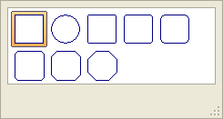

Defining Border Style and Color
Version 8 of Alpha Anywhere provides an expanded definition of border styles
and color. You may apply these borders to controls and layouts.
Make a selection
from the Style picker. The options are:
"None
"Single line"
"Indented"
"Etched"
"Bump"
"Raised"
"Dots"
"Dashes"
"Long Dashes"
|

Line Style Picker |
If you did not select
"None" in step 1, make a selection from the Edge
Shape picker. The options are:
|

Edge Shape Picker |
If you selected "Square"
in the Edge Shape list:
Optionally, make
a selection from the line pixel Width list.
Optionally, hide
or show any of the four sides of the border.
|
Limitations
Desktop applications only.